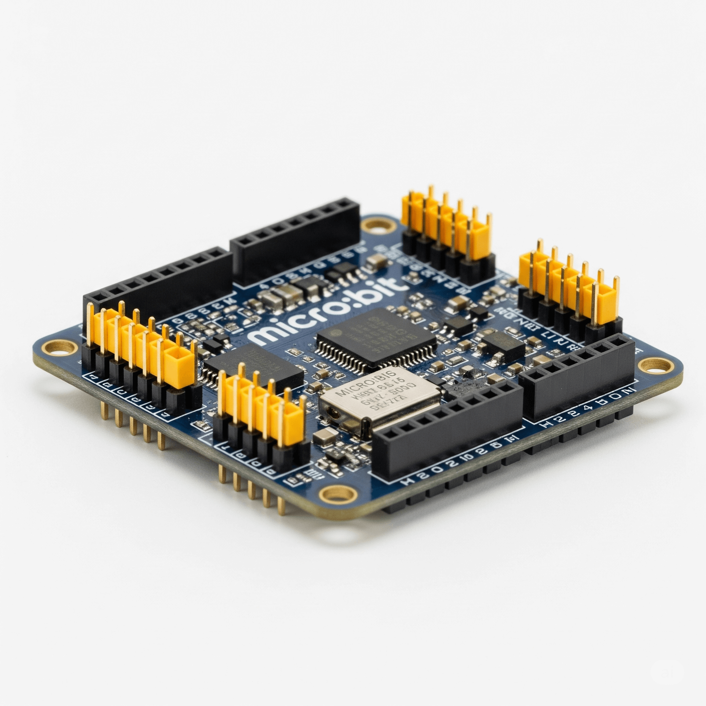
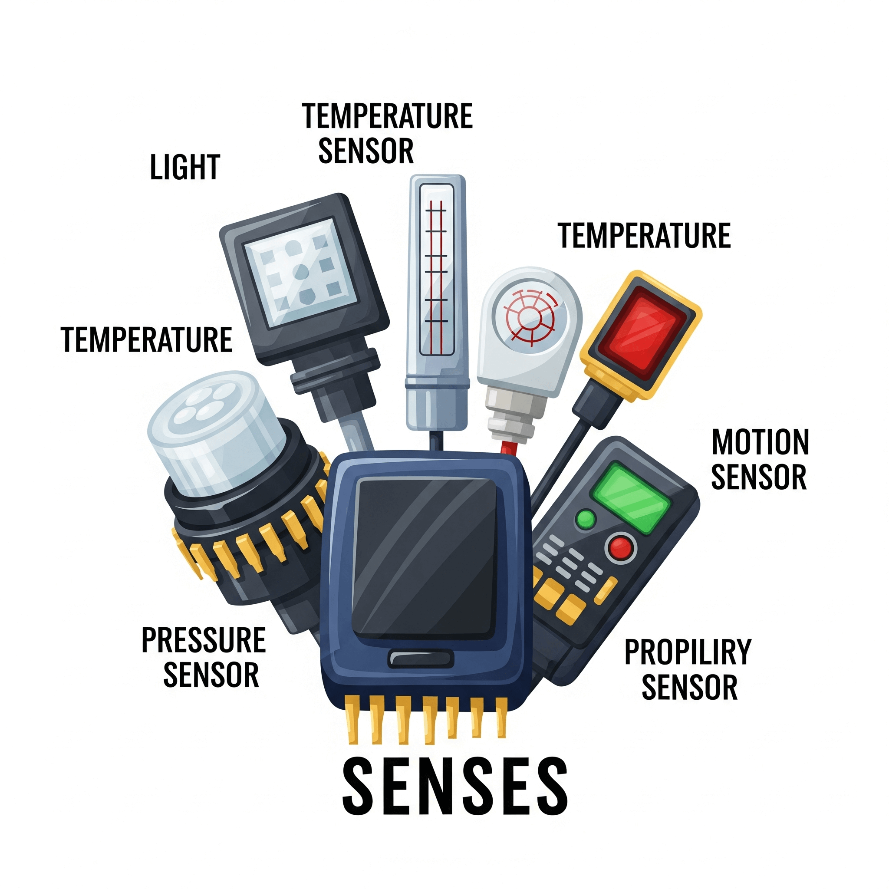
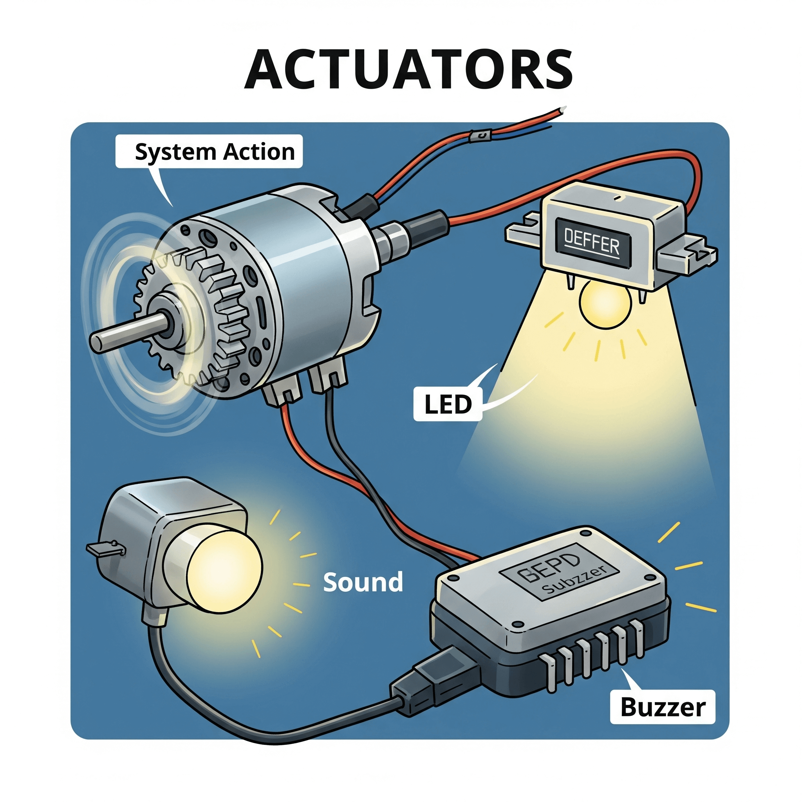

PILOTER UN SYSTÈME :
CAPTEURS, ACTIONNEURS ET MICROCONTRÔLEUR
Situation Déclenchante
Ta mission, si tu l'acceptes...
Compétences à maîtriser :
- ✅ Choisir le bon capteur et le bon actionneur pour réaliser une tâche précise.
- ✅ Câbler correctement les composants (capteurs, actionneurs) à un microcontrôleur.
- ✅ Écrire un programme simple pour faire interagir les capteurs et les actionneurs.
Savoirs et connaissances à acquérir :
- 📚 Comprendre ce qu'est un microcontrôleur (ex: Arduino, Micro:bit) et son rôle de "cerveau".
- 📚 Différencier un capteur Tout-Ou-Rien (TOR) d'un capteur analogique.
- 📚 Savoir ce qu'est un actionneur et donner des exemples.
- 📚 Comprendre la différence entre un signal logique (haut/bas) et un signal analogique.
- 📚 Identifier les entrées et les sorties d'un microcontrôleur.
Introduction et Problématique
De ton smartphone à la station météo de ton jardin, en passant par les drones qui filment des paysages incroyables, nous sommes entourés d'objets "intelligents". Mais qu'est-ce qui les rend si malins ? Ce n'est pas de la magie ! C'est le résultat d'une collaboration parfaite entre trois types de composants électroniques que nous allons explorer. Ces objets ne font qu'obéir à des instructions, en réagissant à leur environnement.
Ce cours va te donner les clés pour comprendre et même créer tes propres objets connectés. Nous allons littéralement ouvrir le capot de ces technologies pour voir comment elles fonctionnent.
La problématique centrale est donc la suivante : Comment un système électronique peut-il percevoir son environnement et agir dessus de manière autonome et programmée ?
Pour y répondre, nous allons d'abord découvrir le rôle du chef d'orchestre : le microcontrôleur. Puis, nous étudierons ses "sens", les capteurs, et ses "muscles", les actionneurs. Enfin, nous apprendrons le langage qu'ils utilisent pour communiquer : les signaux logiques et analogiques, via les entrées et sorties du microcontrôleur.
Exploration en Profondeur
Le Microcontrôleur
🧠 Analogie et Simplification Pédagogique
Le microcontrôleur, c'est comme le cerveau d'un robot. Il n'est pas très puissant (il ne peut pas faire tourner de jeux vidéo complexes), mais il est excellent pour une chose : recevoir des informations, prendre des décisions très rapides basées sur un programme, et donner des ordres. Ton cerveau reçoit l'information "j'ai faim", décide "je vais manger une pomme" et ordonne à ta main de la prendre. Le microcontrôleur fait pareil, mais avec des composants électroniques !
📱 Étude de Cas Concrète
Dans un système d'arrosage automatique, le microcontrôleur (souvent un petit circuit de type Arduino ou similaire) est le chef. Il reçoit l'information d'un capteur d'humidité ("La terre est sèche") et, en suivant son programme, il prend la décision d'ordonner à une électrovanne (un actionneur) de s'ouvrir pour laisser passer l'eau. Dans un drône de loisir, il reçoit en permanence les données des gyroscopes (capteurs) et donne des ordres des milliers de fois par seconde aux moteurs (actionneurs) pour rester stable.
🛠️ Décortiquage Technique - "Sous le Capot"
Pour mettre en œuvre un microcontrôleur comme un Arduino Uno : 1) On le connecte à un ordinateur via un câble USB. 2) On utilise un logiciel (l'IDE Arduino) pour écrire un programme (appelé "sketch"). 3) Dans ce programme, on définit quelles broches (les "pattes" du microcontrôleur) seront des entrées (pour lire les capteurs) et lesquelles seront des sorties (pour commander les actionneurs). 4) On "téléverse" le programme dans la mémoire du microcontrôleur. 5) On débranche l'ordinateur, on alimente l'Arduino (avec une pile par exemple), et il exécute le programme en boucle, de manière autonome.
🤔 Points de Vigilance et Erreurs à Éviter
1. Confondre microcontrôleur et microprocesseur : Le processeur de ton ordinateur (Intel, AMD) est un microprocesseur, il est très puissant mais a besoin de beaucoup d'autres composants pour fonctionner (mémoire RAM, disque dur...). Un microcontrôleur est un mini-ordinateur tout-en-un sur une seule puce : il a déjà son processeur, sa mémoire et ses entrées/sorties. 2. Penser qu'il est "intelligent" : Un microcontrôleur est "bête". Il n'exécute que ce qu'on lui a programmé, sans aucune improvisation.
💡 Le Saviez-Vous ?
Le premier microcontrôleur commercial, le TMS 1000, a été créé par Texas Instruments en 1974. Il était notamment utilisé dans des calculatrices et a ouvert la voie à toute l'électronique embarquée que nous connaissons aujourd'hui !
🤝 Ponts Interdisciplinaires
Mathématiques : La programmation d'un microcontrôleur repose sur la logique (conditions "si... alors... sinon"), les variables et les opérations arithmétiques. Physique-Chimie : On manipule des grandeurs électriques fondamentales comme la tension (en Volts) et le courant (en Ampères).
🚀 Pour les Experts
Les microcontrôleurs comme l'Arduino fonctionnent généralement avec une tension de 5V ou 3.3V. C'est très faible ! Le défi pour les ingénieurs est de concevoir des systèmes de plus en plus économes en énergie, surtout pour les objets sur batterie comme les stations météo connectées ou les trackers GPS. Le choix d'un microcontrôleur "basse consommation" est un critère essentiel dans l'industrie de l'Internet des Objets (IoT).
Le Capteur (TOR et Analogique)
🧠 Analogie et Simplification Pédagogique
Les capteurs sont les sens de notre système. Ton corps a des capteurs : tes yeux (lumière), ta peau (température, pression), tes oreilles (son). Un système électronique, c'est pareil. Un capteur transforme une grandeur physique (lumière, température, distance...) en un signal électrique que le microcontrôleur peut comprendre.
📱 Étude de Cas Concrète
Sur ton smartphone, tu as des dizaines de capteurs : l'accéléromètre (qui détecte l'inclinaison pour faire pivoter l'écran), le capteur de proximité (qui éteint l'écran quand tu le portes à l'oreille), le capteur de luminosité (qui ajuste la clarté de l'écran). Dans une trottinette électrique, un capteur "à effet Hall" dans la gâchette d'accélération mesure à quel point tu appuies pour envoyer plus ou moins de puissance au moteur.
🛠️ Décortiquage Technique - "Sous le Capot"
Il y a deux grandes familles :
1. Capteur TOR (Tout Ou Rien) : Il ne donne que deux informations, comme un interrupteur. Exemple : un capteur de contact sur une porte. Soit la porte est fermée (état BAS), soit elle est ouverte (état HAUT). Il envoie 0V ou 5V.
2. Capteur Analogique : Il donne une information nuancée, une valeur qui peut varier. Exemple : un capteur de température. Il ne dit pas juste "chaud" ou "froid", mais il donne une tension proportionnelle à la température (ex: 1V pour 10°C, 1.5V pour 15°C...). Le microcontrôleur lit cette tension et la convertit en un nombre pour l'utiliser dans son programme.
🤔 Points de Vigilance et Erreurs à Éviter
1. Brancher un capteur au mauvais endroit : Un capteur analogique doit être branché sur une entrée analogique du microcontrôleur (souvent marquées A0, A1...). Un capteur TOR peut être branché sur n'importe quelle entrée numérique. 2. Oublier la "calibration" : Un capteur brut donne une valeur (ex: 452). Il faut souvent la "traduire" en une unité compréhensible (ex: 22°C) grâce à une petite formule mathématique donnée par le fabricant.
💡 Le Saviez-Vous ?
Les animaux sont une grande source d'inspiration pour les capteurs ! La vision infrarouge des serpents a inspiré les caméras thermiques, et le sonar des chauves-souris et des dauphins a inspiré les capteurs à ultrasons utilisés dans les détecteurs de recul des voitures ou les drônes pour éviter les obstacles.
🤝 Ponts Interdisciplinaires
SVT : C'est une parfaite analogie avec le système nerveux humain, où les nerfs sensitifs transmettent les informations des organes des sens (peau, yeux...) au cerveau. Mathématiques : La lecture d'un capteur analogique est une fonction affine : y = ax + b, où 'x' est la valeur lue par le microcontrôleur et 'y' est la grandeur physique réelle (température, distance...).
🚀 Pour les Experts
Certains capteurs sont bien plus complexes et communiquent via des protocoles numériques comme I2C ou SPI. C'est le cas des capteurs très précis comme les gyroscopes 9 axes (accéléromètre + gyroscope + magnétomètre) qu'on trouve dans les smartphones ou les drônes. Ils envoient des "trames" de données numériques au lieu d'une simple tension variable.
L'Actionneur
🧠 Analogie et Simplification Pédagogique
Si les capteurs sont les sens, les actionneurs sont les muscles (et la bouche !). Ils reçoivent un ordre du microcontrôleur (le cerveau) et agissent sur le monde physique. Un actionneur convertit un signal électrique en une action : mouvement, lumière, son, chaleur...
📱 Étude de Cas Concrète
Dans une trottinette électrique, l'actionneur principal est le moteur qui fait tourner la roue. Dans un smartphone, le vibeur est un actionneur (c'est un petit moteur avec une masse excentrée), tout comme l'écran (qui produit de la lumière) ou le haut-parleur (qui produit du son). Dans un système d'arrosage automatique, l'actionneur est l'électrovanne qui s'ouvre ou se ferme.
🛠️ Décortiquage Technique - "Sous le Capot"
Pour commander un actionneur simple comme une LED (une petite lampe) : on la branche sur une broche de sortie numérique du microcontrôleur. Dans le programme, on donne l'ordre digitalWrite(broche_LED, HIGH); pour l'allumer (on envoie 5V) et digitalWrite(broche_LED, LOW); pour l'éteindre (on envoie 0V). Pour des actionneurs plus puissants comme un moteur, on ne peut pas les brancher directement sur le microcontrôleur (il ne fournirait pas assez de courant). On doit utiliser un "intermédiaire de puissance" comme un transistor ou un "driver" de moteur.
🤔 Points de Vigilance et Erreurs à Éviter
1. Brancher un moteur directement sur l'Arduino : C'est l'erreur la plus classique et le meilleur moyen de "griller" son microcontrôleur ! Il faut TOUJOURS une alimentation externe et un composant de commande pour les actionneurs qui consomment beaucoup de courant. 2. Inverser la polarité d'une LED : Une LED a un sens de branchement (une patte longue, l'anode +, et une courte, la cathode -). Si on la branche à l'envers, elle ne s'allume pas.
💡 Le Saviez-Vous ?
Les écrans de nos smartphones sont des matrices de millions de micro-actionneurs ! Chaque pixel d'un écran OLED est une minuscule diode électroluminescente organique qui peut être allumée, éteinte et dont on peut faire varier la couleur et l'intensité individuellement.
🤝 Ponts Interdisciplinaires
Arts Plastiques : On peut créer des œuvres d'art interactives en combinant des actionneurs (LEDs, moteurs...) pilotés par un microcontrôleur qui réagit à des capteurs (présence, son, lumière). C'est ce qu'on appelle l'art numérique. SVT : C'est l'équivalent du système moteur chez l'humain : le cerveau envoie un influx nerveux (ordre) aux muscles (actionneurs) qui se contractent pour produire un mouvement.
🚀 Pour les Experts
Pour faire varier la vitesse d'un moteur ou l'intensité d'une LED, on utilise une technique appelée PWM (Pulse Width Modulation, ou Modulation de Largeur d'Impulsion). Le microcontrôleur envoie des impulsions de 5V très rapides. En jouant sur la durée de ces impulsions (le "rapport cyclique"), on fait varier la puissance moyenne perçue par l'actionneur. C'est comme allumer et éteindre une lumière très vite : si on l'allume la moitié du temps, elle paraîtra à moitié moins lumineuse.
Les Signaux : Logique et Analogique
🧠 Analogie et Simplification Pédagogique
Imagine que tu communiques avec un ami. Tu peux lui faire un signe "pouce en l'air" 👍 ou "pouce en bas" 👎. C'est un signal logique : il n'y a que deux options claires. Maintenant, imagine que tu décris à quel point tu aimes une chanson sur une échelle de 0 à 10. Tu peux dire "7.5/10". C'est un signal analogique : il y a une infinité de valeurs possibles entre les deux extrêmes.
📱 Étude de Cas Concrète
Dans une station météo connectée, un capteur de pluie (pluviomètre à auget basculant) envoie une impulsion (un signal logique HAUT bref) à chaque fois qu'une petite quantité d'eau est collectée. Le microcontrôleur compte ces impulsions. En revanche, le capteur de température envoie un signal analogique : une tension qui varie continuellement avec la température.
🛠️ Décortiquage Technique - "Sous le Capot"
Signal Logique : Dans le monde de l'Arduino (en 5V), c'est très simple. Une tension proche de 0V est interprétée comme un niveau BAS (ou LOW, ou 0). Une tension proche de 5V est interprétée comme un niveau HAUT (ou HIGH, ou 1). C'est le langage des capteurs TOR et des commandes simples d'actionneurs (allumer/éteindre).
Signal Analogique : Le microcontrôleur ne peut pas vraiment comprendre une infinité de valeurs. Il utilise un "Convertisseur Analogique-Numérique" (CAN). Sur un Arduino, il découpe la plage de tension (0-5V) en 1024 petits morceaux (de 0 à 1023). Ainsi, 0V sera lu comme 0, 2.5V sera lu comme 511, et 5V sera lu comme 1023. C'est ce qu'on appelle la "quantification".
🤔 Points de Vigilance et Erreurs à Éviter
1. Lire un signal analogique sur une broche numérique : Si on branche un capteur de température (analogique) sur une entrée numérique, le microcontrôleur ne lira que HAUT ou BAS, on perd toute la nuance de la mesure. 2. Bruit électrique : Les signaux analogiques sont sensibles aux perturbations (le "bruit"). Un long fil peut agir comme une antenne et capter des parasites qui faussent la mesure. On utilise parfois des techniques de filtrage (logiciel ou matériel) pour lisser le signal.
Les Entrées et Sorties (E/S ou I/O)
🧠 Analogie et Simplification Pédagogique
Les broches d'entrées/sorties (en anglais Input/Output ou I/O) sont les portes de communication du microcontrôleur. Une broche configurée en entrée, c'est une "oreille" : le microcontrôleur écoute ce qu'un capteur a à lui dire. Une broche configurée en sortie, c'est une "bouche" : le microcontrôleur donne un ordre à un actionneur.
📱 Étude de Cas Concrète
Dans notre système d'arrosage automatique : la broche connectée au capteur d'humidité du sol est configurée en entrée (analogique). La broche connectée au relais qui commande l'électrovanne est configurée en sortie (numérique).
🛠️ Décortiquage Technique - "Sous le Capot"
La première chose à faire dans un programme Arduino, dans la fonction setup(), est de déclarer le "rôle" de chaque broche qu'on va utiliser avec la commande pinMode(). Par exemple : pinMode(13, OUTPUT); signifie "la broche numéro 13 sera une sortie". Et pinMode(A0, INPUT); signifie "la broche A0 sera une entrée". Une fois ce rôle défini, on utilise les commandes correspondantes dans la boucle principale loop() : digitalWrite() ou analogWrite() pour les sorties, et digitalRead() ou analogRead() pour les entrées.
Avenir et Perspectives
La maîtrise des capteurs, actionneurs et microcontrôleurs est la clé d'entrée dans le monde de demain. L'Internet des Objets (IoT) n'en est qu'à ses débuts : imagine des villes intelligentes où les feux de circulation s'adaptent en temps réel au trafic, des vêtements qui surveillent ta santé, ou une agriculture de précision où chaque plante reçoit exactement l'eau et les nutriments dont elle a besoin grâce à des drônes et des capteurs.
Cela soulève aussi des défis importants. La cybersécurité devient cruciale : qui voudrait qu'un hacker prenne le contrôle de sa voiture ou de sa maison ? La question de la protection des données (que font les entreprises de toutes les informations collectées par les capteurs de nos smartphones ?) est au cœur des débats. Enfin, l'impact environnemental de la production et de la fin de vie de ces milliards d'appareils électroniques est un enjeu majeur pour les ingénieurs de demain.
Conclusion
Nous avons commencé avec une question simple : comment un objet peut-il devenir "intelligent" ? Nous avons maintenant la réponse. Il ne s'agit pas d'une intelligence abstraite, mais d'une boucle d'interaction très concrète :
- Un capteur perçoit une information du monde réel et la traduit en signal électrique.
- Le microcontrôleur, véritable cerveau programmé, reçoit ce signal sur une entrée.
- Il exécute les instructions de son programme ("Si la terre est sèche...") et prend une décision.
- Il envoie un ordre, sous forme de signal électrique, via une sortie.
- Un actionneur reçoit cet ordre et produit une action sur le monde réel (...alors ouvre la vanne d'eau).
De la trottinette électrique au drône, tous les systèmes automatisés reposent sur ce dialogue permanent entre des "sens" (capteurs) et des "muscles" (actionneurs), orchestré par un "cerveau" (microcontrôleur). Vous avez maintenant les bases pour non seulement comprendre ce monde, mais aussi pour commencer à y participer en créant vos propres systèmes.

Exercices d'Auto-évaluation
Exercice 1 : Dans un smartphone, le composant qui fait pivoter l'affichage lorsque vous penchez le téléphone est un...
ActionneurCapteur
Microcontrôleur
Exercice 2 : Je veux construire une alarme pour ma chambre. J'utilise un capteur de mouvement. Si un mouvement est détecté, je veux allumer une grosse lampe rouge et faire sonner un buzzer. La lampe et le buzzer sont des...
ActionneursCapteurs
Signaux analogiques
Exercice 3 : Un capteur de luminosité pour une station météo, qui doit mesurer précisément si le ciel est juste un peu nuageux ou complètement noir, enverra un signal de type...
Logique (TOR)Numérique
Analogique
Synthèse Visuelle (Carte Mentale)
- Piloter un Système
- Le Cerveau : Microcontrôleur
- Rôle : Exécute un programme, prend des décisions.
- Exemples : Arduino, Micro:bit.
- Communique via les Entrées/Sorties.
- Les Sens : Capteurs
- Rôle : Mesure une grandeur physique.
- Type 1 : TOR (Tout Ou Rien) -> Signal Logique (Haut/Bas).
- Type 2 : Analogique -> Signal Analogique (valeur variable).
- Exemples : Température (Smartphone), Humidité (Arrosage), Mouvement (Drône).
- Les Muscles : Actionneurs
- Rôle : Agit sur l'environnement.
- Exemples : Moteur (Trottinette), LED, Buzzer, Écran (Smartphone).
- Le Cerveau : Microcontrôleur
Lexique / Glossaire
- Actionneur
- Composant qui transforme un signal électrique en une action physique (mouvement, lumière, son...).
- Analogique (Signal)
- Signal électrique dont la tension peut varier continuellement pour représenter une information nuancée (ex: température).
- Capteur
- Composant qui transforme une grandeur physique (température, lumière...) en un signal électrique.
- Entrée/Sortie (E/S ou I/O)
- Broches (pattes) du microcontrôleur qui servent à recevoir des informations (entrée) ou à envoyer des commandes (sortie).
- Logique (Signal)
- Signal électrique qui ne peut prendre que deux états : HAUT (HIGH) ou BAS (LOW). Aussi appelé signal numérique ou TOR.
- Microcontrôleur
- Circuit intégré qui contient un processeur, de la mémoire et des périphériques d'entrée/sortie. C'est le "cerveau" programmable d'un système.
- TOR (Tout Ou Rien)
- Se dit d'un capteur ou d'un signal qui n'a que deux états possibles (ex: ouvert/fermé).
Pour Aller Plus Loin
- Mini-Projet à Réaliser : Avec un kit de démarrage Arduino ou Micro:bit, essaie de construire un "thermomètre lumineux". Utilise un capteur de température (analogique) et 3 LEDs (verte, orange, rouge). Programme le microcontrôleur pour que la LED verte s'allume s'il fait moins de 20°C, l'orange entre 20°C et 25°C, et la rouge au-dessus de 25°C.
- Vidéo de Référence à Regarder : Cherche sur YouTube "Arduino pour les nuls" ou "Comment fonctionne un drone". De nombreuses chaînes de vulgarisation scientifique expliquent ces concepts de manière très visuelle.
- Métier à Découvrir : Ingénieur(e) en systèmes embarqués. C'est le professionnel qui conçoit et programme les systèmes électroniques intelligents que l'on trouve partout, des jouets aux fusées, en passant par les trottinettes électriques et les stations météo.